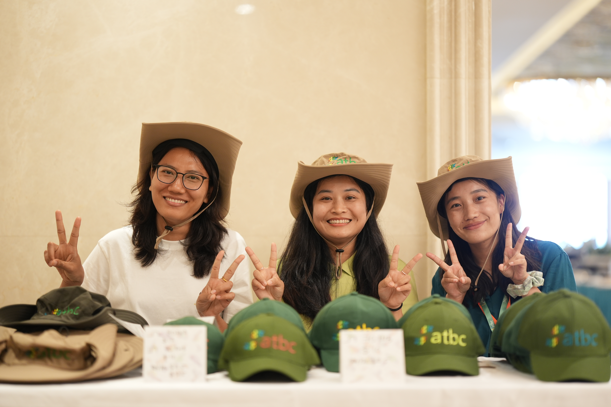
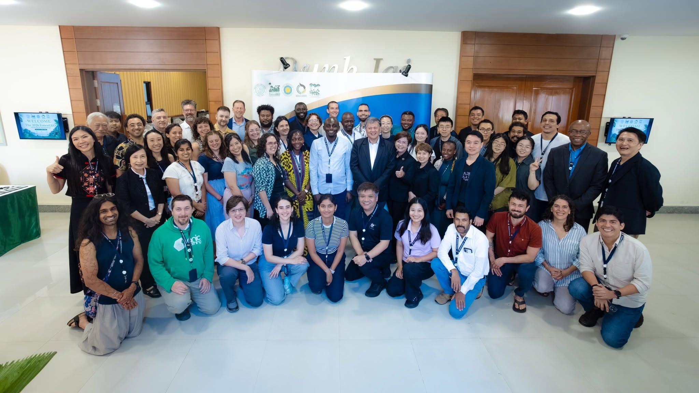
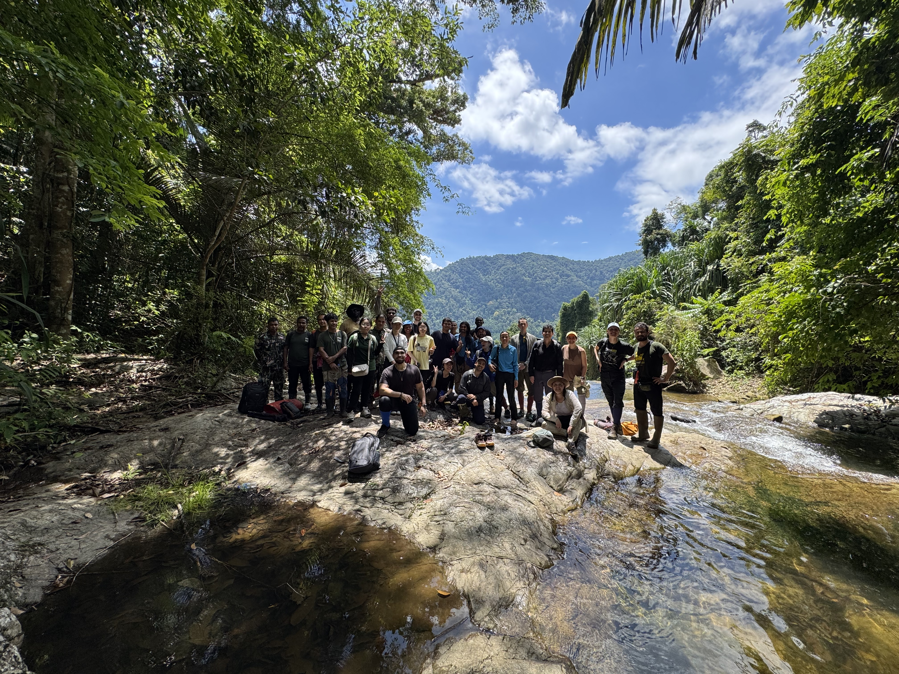
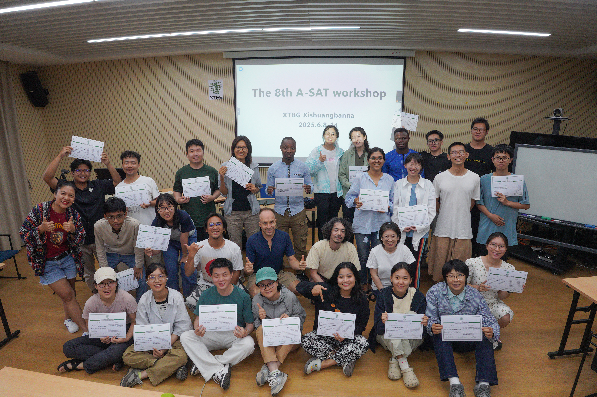

- Began PhD studies at UCAS, supported by the CAS-ANSO Scholarship.
Thi Duyen Nguyen
I am a PhD Candidate at the University of Chinese Academy of Sciences (UCAS), based at Xishuangbanna Tropical Botanical Garden (XTBG), Chinese Academy of Sciences (CAS).
I study tree architectural diversity and forest structure at any scale. My current research examines how trees grow, compete, and adjust their architecture under different ecological conditions using large forest datasets and Bayesian statistical models.
News
- Volunteered at The 62nd Annual Meeting of the Association for Tropical Biology and Conservation (ATBC 2026).

- Participated in the ForestGEO Analytical Workshop.


- Participated in The 8th Advanced Statistics Workshop at XTBG.

- New paper, a part of my Master's thesis revealing how wood density shapes global tree architecture, is now online in Journal of Forestry Research.
Research
My research explores how ecological processes shape forest structure, tree architectural diversity, and tropical forest communities across scales.
I am especially interested in tree allometry, competition, forest structure, and Bayesian statistical modelling using large forest datasets.
Publications
Saturating allometric relationships reveal how wood density shapes global tree architecture
Thi Duyen Nguyen and Masatoshi Katabuchi. Journal of Forestry Research, 36, 107.
Education
PhD Candidate
University of Chinese Academy of Sciences and Xishuangbanna Tropical Botanical Garden, Chinese Academy of Sciences, China.
MSc Ecology
University of Chinese Academy of Sciences and Xishuangbanna Tropical Botanical Garden, Chinese Academy of Sciences, China. Thesis: A study of allometric scaling models: Integrating interspecific constraints to explain variation in tree architecture.
BSc Biotechnology
Vietnam National University of Agriculture and Vietnam Academy of Science and Technology, Vietnam. Thesis: Molecular characterization and genotyping of the VN-3 strain of hepatitis virus based on VP1 antigen gene data.
Professional experience
Research Assistant
Yunnan Key Laboratory of Forest Ecosystem Stability and Global Change, Xishuangbanna Tropical Botanical Garden, Chinese Academy of Sciences.
Courses, Conferences and Workshops
| Conference Name | Details |
|---|---|
| 2026 | |
| The 62nd Annual Meeting of the Association for Tropical Biology and Conservation (ATBC), China (28 June-3 July, 2026) | Volunteer |
| ForestGEO Analytical Workshop, Thailand (13-26 June, 2026) | Participant |
| 10th XTBG Youth Science Festival, China (31 January-2 February, 2026) | Poster Presentation: Forest Carbon and Math |
| 2025 | |
| Vietnam Conference of Youth on Climate, Vietnam (8 November, 2025) | Delegate |
| The 72nd Annual Meeting of the Ecological Society of Japan, Japan (15-18 March, 2025) | Oral Presentation: Saturating allometric relationships reveal how wood density shapes global tree architecture |
| The 8th XTBG Advanced Statistics Course, China (8-14 June, 2025) | Participant |
| Advanced Scientific Writing & Publishing Course, XTBG-CAS, China (27 April, 2025) | Participant |
| 2023 | |
| The 8th International Canopy Conference, China (15-19 October, 2023) | Volunteer |
| AFEC-X Statistics Course, XTBG-CAS, China (November, 2023) | Participant |
| 2019 | |
| Annual Conference of the Korean Society for Horticultural Science, South Korea (23-26 October, 2019) | Participant |
| Pedagogical Training Program for University and College Lecturers, National Academy of Education Management, Vietnam (28 September-26 November, 2019) | Participant |
| International Union for Conservation of Nature Marine Turtle Conservation Programme, Con Dao National Park, Vietnam (11-22 July, 2019) | Volunteer |
| 2017 | |
| 2nd Transmed-VN Conference: Breakthroughs in Cell Cancer Therapies, Ho Chi Minh City University of Medicine and Pharmacy, Vietnam (19-20 August, 2017) | Participant |
| 2016 | |
| Bioinformatics Course: 2-month training on RNA-seq, Ubuntu system, and Next Generation Sequencing (NGS), Bioinformatics Laboratory, Institute of Biotechnology, VAST, Vietnam (July-September, 2016) | Trainee |
| 2015 | |
| Joint Course: Plant Resistance to Pathogens and Plant Metabolism Pathways, Vietnam National University of Agriculture, Vietnam, and University of Tsukuba, Japan (23 March-14 June, 2015) | Trainee |
Grants and Awards
CAS-ANSO Scholarship for PhD studies.
XTBG Research Grant for Publication in High Impact Journal.
XTBG Graduate Fund.
ANSO Scholarship for Young Talents for Master's studies.
Outside Research
I enjoy reading, especially the works of Kazuo Ishiguro, reflecting on new ideas, and spending time in nature.
Let us connect
Open to collaboration, research conversations, and questions about my work.